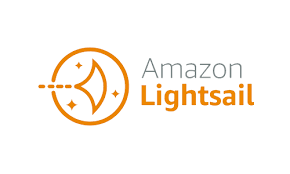
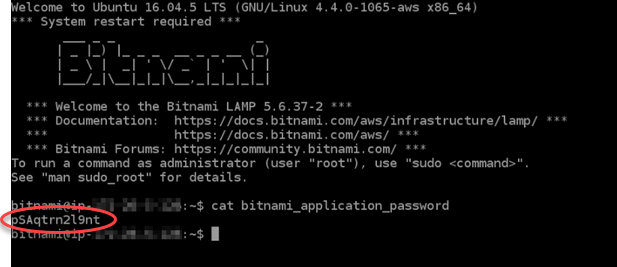
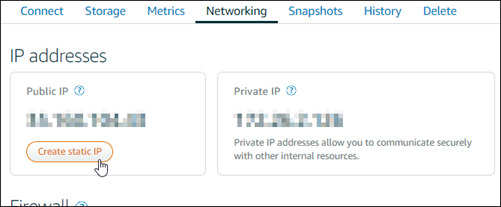
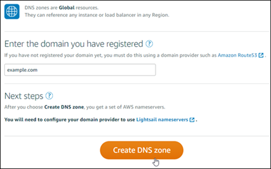
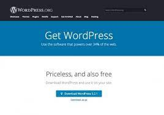
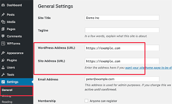

PHP WEB APPLICATION
My name is Joel Zellem and I am going to give you a basic, easy to follow/read checklist. It isn't flashy, but the design of a checklist shouldn't be. I REALLY hope these steps work for you to make making websites as easy as possible.

Wordpress Logo. CC: Wikipedia
Overview
Using PHP Web Application systems are helpful for individuals or companies who want to make and manage websites. If you are a company, using any Content Management Systems(CMS) would be helpful to get your team of coders on the same page. A CMS gives you the ability to code and create websites by giving you pieces of code that will help you create your vision. All you have to do is piece them together.

Amazon LightSail Logo. CC:cPanel.net
WordPress is the CMS that I will be highlighting on this site. While CMS are useful tools that you can use, you'll need a server that can support it. That is where Amazon Light Sail conmes in.
Step 1: Sign up for AWS
Step 2: Create a Wordpress instance

Step 3: Connect to Instance using SSH then get application password

In order to get the password you must launch Bitnami and use the username: root
Then type -$ cat bitnami_application_password
Step 4: Click the link of your Wordpress instance, then click create static IP.
Step 5: Create a lightsail DNS zone and map it to Wordpress instance
Now on to using Wordpress
Step 1: Scroll down to the bottom of the page and click "Get WordPress"
Step 2: Scroll to bottom again and Click "Download WordPress"
If you need additional help after you click download it will provide you with a help link. This link will take you to wordpress.org/support/ This page is full of links that will help you with just about any specific question you or someone else might have about this application.
Step 3: Now copy and paste the link you recieved from AWS into your browser and add /wp-login.php. That is the Host code that will allow you to login to your site managing browser.
It should look something like this:
3.92.55.167/wp-login.php
Step 4:Enjoy WordPress!
Unfortunately this is as far as I can take you. However I can introduce you to someone who helped me with WordPress when I had questions. Josh, The cool bearded guy.
If you have anymore questions for Josh the cool bearded guy he has about 6 more videos just like this one. It is about an hour of content, however the great thing about video tutorials is you can rewind and rewatch any part you are confused about as many times as you need in order to understand what is happening. I understand that making websites isn't always easy, so watching tutorial vidoes with no pressure is a great way to learn how to use CMS. Especially word press
More Tutorial Videos